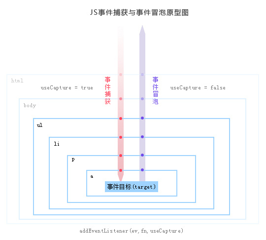

事件冒泡和捕获
事件冒泡：即事件由子元素向祖先元素传播的，具体元素先收到事件命令并执行了，然后再一层一层地往上逐个询问父元素，看父元素是否要触发执行。此过程（例子：气泡从水底向水面上浮一样）
事件捕获：捕获阶段是一个和冒泡阶段完全相反的过程，即事件由祖先元素向子元素传播，祖先元素收到事件命令，往下传达到具体元素，具体元素收到才执行。此过程（例子：一个石头从水面向水底下沉一样）
事件传播：事件捕获和冒泡的过程
事件流包括三个阶段
1.捕获阶段：从文档的根节点流向目标对象 2.目标阶段：然后再目标对象上触发 3.冒泡阶段：之后再回溯到文档的根节点流程如下：

浏览器支持方式
IE6/7/8支持冒泡阶段，不支持捕获阶段
目前标准浏览器一般支持冒泡阶段
W3C支持同时捕获和冒泡阶段
事件捕获和冒泡的过程统称为事件的传播
(1)传播是可以阻止的
(2)在W3c中，使用event.stopPropagation（）方法
(3)在捕获过程中使用stopPropagation()方法，则后面的冒泡过程也不会发生了；也可以在冒泡阶段中使用stopPropagation（）停止事件向上层元素冒泡。而在IE中则使用cancelBubble（IE中只有冒泡，没有捕获）
(4)从各浏览器提供的注册事件监听的方法中可见一斑，例如适用于ie,opera的attachEvent，有两个参数， attachEvent(“on”+type,fn)，而适用于所谓标准浏览器的addEventListener则有三个参数, addEventListener(type,fn,boolean）,前面两个参数不用解释， 第三个参数boolean，就是决定注册事件发生在捕获阶段还是冒泡阶段。第三个参数为true执行捕获阶段，为false执行冒泡阶段